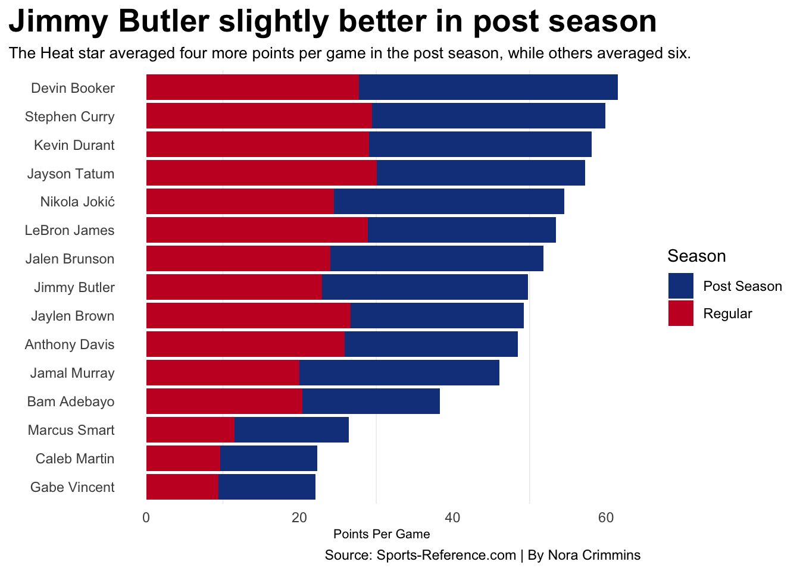
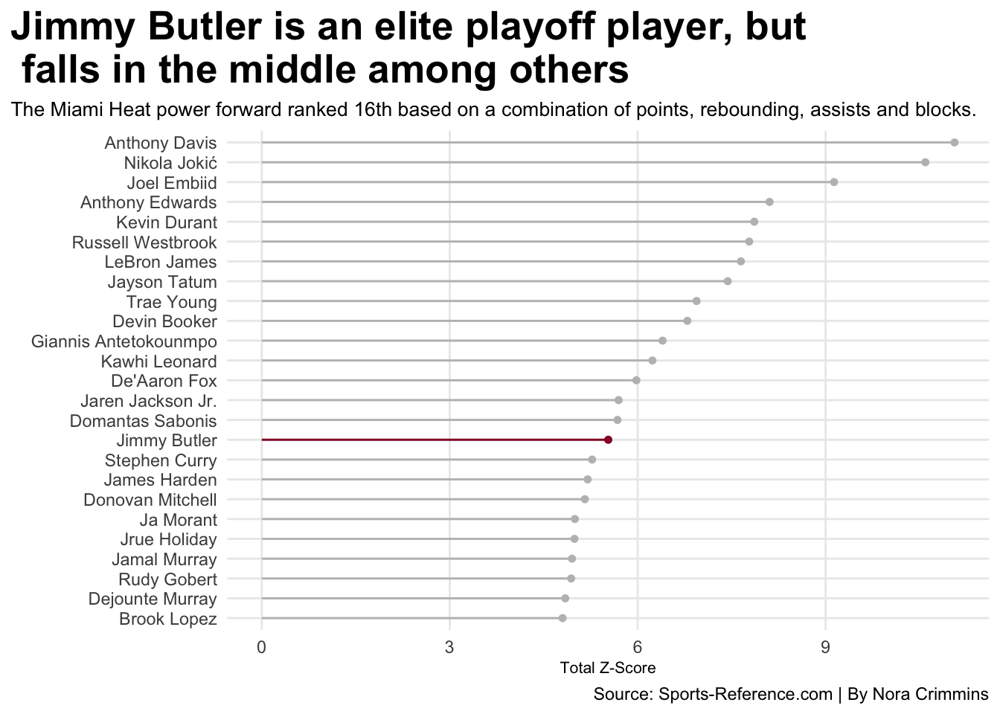

If you have consumed any NBA news from 2020 to now, you may have heard of the supposed phenomenon that is Miami Heat’s Jimmy Butler in the playoff season. The NBA star has led the Heat organization to the postseason for four consecutive years and in two of those years the team has advanced to the Finals. His clutch playoff performances have led him to nicknames like “Jimmy Buckets,” “Playoff Jimmy,” and have prompted comparisons to players like Michael Jordan, Dwanye Wade and Kawhi Leonard, but statistically is he actually a better player in the postseason? Or is Playoff Jimmy just another overhyped narrative drawn out by the media?
In 2023, the Miami Heat entered the postseason as the No. 8 seed in the Eastern Conference. They were considered underdogs in each series, but would ultimately make it to the Finals, where they would lose to a dominant Denver Nuggets team.
All eyes were on the Miami power forward to take over games and add to the spectacle that is “Playoff Jimmy.” He did just that. Most notably in a Game 4 win over the Milwaukee Bucks, where he scored a career-high 56 points. In the first three games of this series he averaged 30 points per game and he was able to close out the series with a total of 42.
On the other hand, the Tomball native has been called out for his weak performances in the regular season. The most points he has scored in a regular season game in the 2022-2023 season was 38. In fact, the 34-year-old admitted he doesn’t start “playing for real” until after the All-Star break.
So his points per game should be greater in the postseason right?
Code
library(tidyverse)library(gt)library(ggalt)playoffs23 <-read_csv("nbaplayoffs23.csv")regszn23 <-read_csv("nbaregszn23.csv")top15playoffs <- playoffs23 |>top_n(15,wt=PTS) |>mutate(ppg = PTS/G)names <- top15playoffs |>pull(Player)top15reg <- regszn23 |>filter(Player %in% names) |>group_by(Player) |>summarise(G =sum(G),MP =sum(MP),PTS=sum(PTS) ) |>mutate(ppg = PTS/G) stackedregular <- top15reg |>select(Player, ppg) |>mutate(Season="Regular")stackedpost <-top15playoffs |>select(Player, ppg) |>mutate(Season="Post Season") stacked <-bind_rows(stackedregular, stackedpost)ggplot() +geom_bar(data=stacked, aes(x=reorder (Player, ppg), weight=ppg, fill=Season)) +coord_flip() +labs(title="Jimmy Butler slightly better in post season", subtitle="The Heat star averaged four more points per game in the post season, while others averaged six.", x="", y="Points Per Game", caption="Source: Sports-Reference.com | By Nora Crimmins") +theme_minimal() +theme(panel.grid.major =element_blank(),plot.title =element_text(size =20, face ="bold"),plot.subtitle =element_text(size=10),axis.title =element_text(size =8),plot.title.position ="plot") +scale_fill_manual(values=c("#17408B", "#C9082A"))

Butler’s remarkable playoff stint in the bubble led to hall of fame discussions, villain to hero redemption arcs and most notably the moniker Playoff Jimmy. Against the Los Angeles Lakers and one of the NBA’s best playoff players Lebron James, Butler was able to put up two triple-doubles. In Game 3 he scored 40 points and in Game 5 he put up 35 to keep the Heat alive. But once again his points per game were only slightly better in the postseason.
But, it’s not just the points per game that determines who the greatest playoff players are. Donovan Mitchell may have put up an eye-catching amount of points per game, but what about his rebounding, assists and blocks. Is he still a part of this conversation? What about Jimmy Butler? Using a standard statistical measure that combines points, rebounds, assists and blocks per game, Butler and Mitchell fall in the lower middle among others.
Code
pergame <- playoffs23 |>mutate(PTSpergame = PTS/G,TRBpergame = TRB/G,ASTpergame = AST/G,BLKpergame = BLK/G ) |>select(Player, Tm, PTSpergame, TRBpergame, ASTpergame, BLKpergame)playerzscore <- pergame |>mutate(PTSzscore =as.numeric(scale(PTSpergame, center =TRUE, scale =TRUE)),TRBzscore =as.numeric(scale(TRBpergame, center =TRUE, scale =TRUE)),ASTzscore =as.numeric(scale(ASTpergame, center =TRUE, scale =TRUE)),BLKzscore =as.numeric(scale(BLKpergame, center =TRUE, scale =TRUE)),TotalZscore = PTSzscore + TRBzscore + ASTzscore + BLKzscore ) |>ungroup () |>select(Player, Tm, TotalZscore) |>top_n(25, wt=TotalZscore)JimmyButler <- playerzscore |>filter(Player=="Jimmy Butler")ggplot() +geom_lollipop(data=playerzscore, aes(y=reorder(Player, TotalZscore), x=TotalZscore), horizontal =TRUE,color="grey" ) +geom_lollipop(data=JimmyButler,aes(y=reorder(Player, TotalZscore), x=TotalZscore),horizontal =TRUE,color ="#98002E" ) +theme_minimal() +theme(plot.title =element_text(size =20, face ="bold"),plot.subtitle =element_text(size=10),axis.title =element_text(size =8),panel.grid.minor =element_blank(),plot.title.position ="plot" ) +labs(title ="Jimmy Butler is an elite playoff player, but \n falls in the middle among others", subtitle="The Miami Heat power forward ranked 16th based on a combination of points, rebounding, assists and blocks.", y="", x="Total Z-Score", caption="Source: Sports-Reference.com | By Nora Crimmins")

The numbers don’t lie. Jimmy Butler is better in the postseason, but not by much. As for “Playoff Jimmy” Butler denies that “it is a thing,” so maybe the hype surrounding his playoff performances should die down until he at least wins a ring.